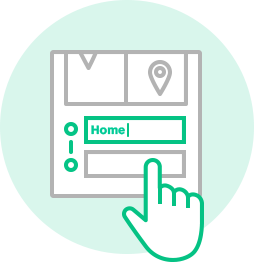
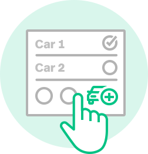

QUICK TIP:
Name Your Location
Now that you've caught a drive, tap each text field to personalize your drive and name your location

QUICK TIP:
Add A Vehicle
Add vehicles to help tracking. Open the Personalization tab on your left and choosing vehicles.
QUICK TIP:
Join Drives
Let MileIQ help you out by adding your work hours. Open the Personalization tab on the left.